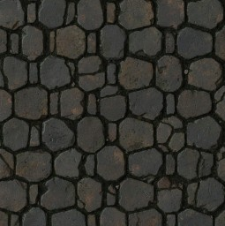

<!DOCTYPE html>
<html>
  <head>
    <meta charset="UTF-8" name="google" content="notranslate"/>
    <meta name="viewport" content="width=device-width, initial-scale=1.0">
    <script language="javascript" id="generateMathMLEquation">
      <!--
        // ---------- 工具 ----------
        function randInt(min, max)
        {return Math.floor(Math.random() * (max - min + 1)) + min;}
        function choice(arr)
        {return arr[randInt(0, arr.length - 1)];}
        function randSimpleNumber() {
          const pool = Array.from({ length: 81 }, (_, i) => (i-40)/4);
          return choice(pool);
        }
        function GCD(a, b) {
          a = Math.abs(a);
          b = Math.abs(b);
          while (b !== 0) {
            let temp = b;
            b = a % b;
            a = temp;
          }
          return a;
        }
        function toFraction(num) {
          if (Number.isInteger(num))
          {return { mml: `<mn>${num}</mn>` };}
          const s = num.toString();
          const decimalLen = s.split('.')[1].length;
          const denominator = 10 ** decimalLen;
          const numerator = num * denominator;
          const g = GCD(Math.abs(numerator), denominator);
          return {
            mml: mfrac(
              mn(numerator / g),
              mn(denominator / g)
            )
          };
        }
        function mn(n) {
          if (Number.isInteger(n))
          {return `<mn>${n}</mn>`;}
          const f = toFraction(n);
          return f.mml;
        }
        function mi(x)
        {return `<mi>${x}</mi>`;}
        function mo(op)
        {return `<mo>${op}</mo>`;}
        function mrow(...children)
        {return `<mrow>${children.join("")}</mrow>`;}
        function mfrac(num, den)
        {return `<mfrac>${num}${den}</mfrac>`;}
        function numberToFractionMathML(num) {
          // 內部函數：把數字轉成分數 MathML
          function toFractionMathML(n) {
            if (Number.isInteger(n)) return mn(n);
            const s = n.toString();
            const decimalLen = s.split('.')[1]?.length || 0;
            const denominator = 10 ** decimalLen;
            const numerator = n * denominator;
            const g = GCD(Math.abs(numerator), denominator);
            const simpleNumerator = numerator / g;
            const simpleDenominator = denominator / g;
            return mfrac(
              mn(simpleNumerator),
              mn(simpleDenominator)
            );
          }
          // 封裝成完整 <math display="block">
          return `<math display="block">
            ${toFractionMathML(num)}
          </math>`;
        }
        // ---------- 線性表達式 ----------
        function linearExpr(a, b, mml)
        {return { a, b, mml };}
        function baseExpr()
        {return linearExpr(1, 0, mi("x"));}
        function addConst(e, c) {
          return linearExpr(
            e.a,
            e.b + c,
            mrow(
              e.mml,
              mo(c >= 0 ? "+" : "−"),
              mn(Math.abs(c))
            )
          );
        }
        function mulConst(e, c) {
          if (c === 1) return e;
          return linearExpr(
            e.a * c,
            e.b * c,
            mrow(
              mn(c),
              mo("&#x2062;"), // 隱式乘法
              mrow(mo("("), e.mml, mo(")"))
            )
          );
        }
        function addExpr(e1, e2) {
          return linearExpr(
            e1.a + e2.a,
            e1.b + e2.b,
            mrow(
              mo("("),
              e1.mml,
              mo("+"),
              e2.mml,
              mo(")")
            )
          );
        }
        function divConst(e, c) {
          if (c === 1) return e;
          if (c === 0) throw new Error("division by zero");
          return linearExpr(
            e.a / c,
            e.b / c,
            mfrac(
              e.mml,
              mn(c)
            )
          );
        }
        // ---------- 隨機生成 ----------
        function randomLinear(depth = 3) {
          if (depth === 0) return baseExpr();
          const e = randomLinear(depth - 1);
          const op = choice(["addConst", "mulConst", "addExpr"]);
          if (op === "addConst")
          {return addConst(e, randSimpleNumber());}
          if (op === "mulConst") {
            const c = randSimpleNumber();
            return c === 0 ? e : mulConst(e, c);
          }
          if (op === "addExpr")
          {return addExpr(e, randomLinear(depth - 1));}
        }
        // ---------- 主生成器 ----------
        function generateMathMLEquation() {
          const solution = randSimpleNumber();
          let L = randomLinear(3);
          let R0 = randomLinear(2);
          const Lval = L.a * solution + L.b;
          const Rval = R0.a * solution + R0.b;
          const diff = Lval - Rval;
          let R = addConst(R0, diff);
          if (L.a === R.a)
          {L = addConst(L, randSimpleNumber() || 1);}
          return {
            solution,
            mathml: `<math display="block">
              <mtable rowspacing="0.5em">
                <mtr>
                  ${L.mml}
                </mtr>
                <mtd>
                  <mspace height="0.2em"/>
                </mtd>
                <mtr>
                  <mrow>
                    <mo>=</mo>
                    ${R.mml}
                  </mrow>
                </mtr>
              </mtable>
            </math>`
          };
        }
      -->
    </script>
    <script language="javascript" id="generateMaze">
      <!--
        function generateMaze(width, height) {
          const rows = height * 2 + 1;
          const cols = width * 2 + 1;
          const maze = Array.from({ length: rows }, () => Array(cols).fill(0));
          const visited = Array.from({ length: rows }, () => Array(cols).fill(false));
          const directions = [
            { dx: 0, dy: -2, dir: 1, opp: 3 }, // 上
            { dx: 2, dy: 0, dir: 2, opp: 4 },  // 右
            { dx: 0, dy: 2, dir: 3, opp: 1 },  // 下
            { dx: -2, dy: 0, dir: 4, opp: 2 }, // 左
          ];
          function shuffle(arr) {
            for (let i = arr.length - 1; i > 0; i--) {
              const j = Math.floor(Math.random() * (i + 1));
              [arr[i], arr[j]] = [arr[j], arr[i]];
            }
            return arr;
          }
          function inBounds(x, y)
          {return x > 0 && x < cols - 1 && y > 0 && y < rows - 1;}
          const endX = cols - 2;
          const endY = rows - 2;
          const mainPath = [];
          // ===== 第一階段：DFS 生成主路徑（保留回溯方向）=====
          function dfsMain(x, y) {
            visited[y][x] = true;
            mainPath.push([x, y]);
            if (x === endX && y === endY)
            {return true;}
            for (const { dx, dy, dir, opp } of shuffle([...directions])) {
              const nx = x + dx;
              const ny = y + dy;
              if (inBounds(nx, ny) && !visited[ny][nx]) {
                const wx = x + dx / 2;
                const wy = y + dy / 2;
                maze[wy][wx] = -1;       // 拆牆
                maze[ny][nx] = opp;     // ⭐ 標記回到父節點的方向
                if (dfsMain(nx, ny))
                {return true;}
                // 回溯失敗，還原
                maze[wy][wx] = 0;
                maze[ny][nx] = 0;
              }
            }
            mainPath.pop();
            visited[y][x] = false;
            return false;
          }
          dfsMain(1, 1);
          maze[1][1] = 0; // 起點
          // ===== 第二階段：BFS 生成岔路（同樣標回溯方向）=====
          const queue = [...mainPath];
          while (queue.length) {
            const [x, y] = queue.shift();
            for (const { dx, dy, dir, opp } of shuffle([...directions])) {
              const nx = x + dx;
              const ny = y + dy;
              if (!inBounds(nx, ny) || visited[ny][nx]) continue;
              // 控制岔路密度
              if (Math.random() < 0.6) continue;
              const wx = x + dx / 2;
              const wy = y + dy / 2;
              maze[wy][wx] = -1;
              maze[ny][nx] = opp;   // ⭐ BFS 生成的節點也有路標
              visited[ny][nx] = true;
              queue.push([nx, ny]);
            }
          }
          return maze;
        }
      -->
    </script>
    <script language="javascript" id="arrangeMaze">
      <!--
        function arrangeMaze(size=5){
          const mainMaze=generateMaze(size,size);
          const questionMap=Array.from({length:size},()=>Array(size));
          for(let i=0;i<size;i++){
            for(let j=0;j<size;j++){
              if (i == 0 && j == 0) continue;
              const thisQuestion=generateMathMLEquation();
              let mazeWay=mainMaze[2*i+1][2*j+1]-1;
              let candidates=new Array(4);
              candidates[mazeWay]=thisQuestion.solution;
              do{
                const pool=Array.from({ length: 81 }, (_, i) => (i-40)/4);
                const randomAnswer = pool[Math.floor(Math.random() * pool.length)];
                if(!(randomAnswer in candidates)){
                  for (let idx = 0; idx < 4; idx++) {
                    if (candidates[idx] == undefined) {
                      candidates[idx] = randomAnswer;
                      break;
                    }
                  }
                }
              }while(candidates.filter(v => v !== undefined).length < 4)
              questionMap[i][j]={
                question:thisQuestion.mathml,
                candidates:candidates,
                correctAnswer:thisQuestion.solution
              }
            }
          }
          return [mainMaze,questionMap];
        }
      -->
    </script>
    <style type="text/css" id="FixedEffect">
      <!--
        body{
          //background-color:#0a0c0c;
          user-select: none;          /* 標準寫法 */
          -webkit-user-select: none;  /* Chrome, Safari */
          -moz-user-select: none;     /* Firefox */
          -ms-user-select: none;      /* IE/Edge */
          margin: 0;
          height: 100vh;
          display: flex;
          align-items: center;
          justify-content: center;
          background: radial-gradient(circle at center, #000 0%, #0a0c0c 70%);
          font-family: "Times New Roman", serif;
          color: #e6dcc3;
        }
        #mainWindow{
          height: 100vh;
          aspect-ratio: 1/1;
          position:absolute;
          top:0px;
          left:calc(calc(100vw - 100vh) / 2);
          background-image:url(floor.png);
          background-size: contain;
          display: flex;
          justify-content: center;
          align-items: center;
          transition: all 1s ease;
        }
        math{margin: 20px;}
        #mathQuestion{
          border: 5px groove #C5A059;
          //border-color:#C5A059;
          background-color:#0F141DBF;
          color: #e3e2cf;
          font-size: 20px;
          opacity: 0;
        }
        .choose{
          border: 5px groove #8E8E8E;
          background-color: #e3e2cf8f;
          color: #0F141D;
          font-size: 35px;
          display: flex;
          align-items: center;
          justify-content: center;
          width: 80px;
          height: 80px;
          position: absolute;
          opacity: 0;
        }
        #U{top: 20px;}
        #R{right: 20px;}
        #D{bottom: 20px;}
        #L{left: 20px;}
      -->
    </style>
    <style type="text/css" id="GameOver">
      <!--
        /* 結算面板 */
        .result-panel {
          width: 320px;
          padding: 20px;
          background:
            linear-gradient(135deg, rgba(255,255,255,0.03) 25%, transparent 25%) 0 0 / 6px 6px,
            linear-gradient(225deg, rgba(255,255,255,0.03) 25%, transparent 25%) 0 0 / 6px 6px,
            #2a2a2a80;
          border: 2px solid #5c4a2e;
          box-shadow:
            inset 0 0 20px rgba(0,0,0,0.8),
            0 0 25px rgba(0,0,0,0.9);
          border-radius: 6px;
          animation: fadeIn 0.8s ease-out forwards;
        }

        /* 標題 */
        .result-title {
          text-align: center;
          font-size: 22px;
          letter-spacing: 2px;
          margin-bottom: 16px;
          color: #f0c674;
          text-shadow: 0 0 6px rgba(240,198,116,0.6);
        }

        /* 分隔線 */
        .divider {
          height: 1px;
          background: linear-gradient(to right, transparent, #6b5a3a, transparent);
          margin: 12px 0;
        }

        /* 資訊列 */
        .stat {
          display: flex;
          justify-content: space-between;
          margin: 6px 0;
          font-size: 15px;
        }

        /* 成敗狀態 */
        .status {
          text-align: center;
          margin-top: 14px;
          padding: 8px;
          border: 1px solid #6b5a3a;
          background: rgba(0,0,0,0.4);
          color: #c94f4f;
          text-shadow: 0 0 5px rgba(201,79,79,0.6);
        }

        /* 按鈕 */
        .button {
          margin-top: 16px;
          text-align: center;
        }

        .button a {
          display: inline-block;
          padding: 6px 16px;
          text-decoration: none;
          color: #e6dcc3;
          border: 1px solid #6b5a3a;
          background: linear-gradient(#3a2f1f, #1e1810);
          box-shadow: inset 0 0 6px rgba(0,0,0,0.8);
        }

        .button a:hover {
          color: #f0c674;
          box-shadow: 0 0 8px rgba(240,198,116,0.6);
        }
      -->
    </style>
    <style type="text/css" id="DynamicEffects">
      <!--
        @keyframes fadeIn {
          from
          {opacity: 0;}
          to
          {opacity: 1;}
        }
        .fade-in
        {animation: fadeIn 0.8s ease-out forwards;}
        
        @keyframes goDown {
          0%
          {transform: translateY(0);opacity: 1;}
          49%
          {transform: translateY(-100%);opacity: 0;}
          51%
          {transform: translateY(100%);opacity: 0;}
          100%
          {transform: translateY(0);opacity: 1;}
        }
        .goDown
        {animation: goDown 2s ease-in-out forwards;}
        
        @keyframes goUp {
          0%
          {transform: translateY(0);opacity: 1;}
          49%
          {transform: translateY(100%);opacity: 0;}
          51%
          {transform: translateY(-100%);opacity: 0;}
          100%
          {transform: translateY(0);opacity: 1;}
        }
        .goUp
        {animation: goUp 2s ease-in-out forwards;}
        
        @keyframes goLeft {
          0%
          {transform: translateX(0);opacity: 1;}
          49%
          {transform: translateX(100%);opacity: 0;}
          51%
          {transform: translateX(-100%);opacity: 0;}
          100%
          {transform: translateX(0);opacity: 1;}
        }
        .goLeft
        {animation: goLeft 2s ease-in-out forwards;}
        
        @keyframes goRight {
          0%
          {transform: translateX(0);opacity: 1;}
          49%
          {transform: translateX(-100%);opacity: 0;}
          51%
          {transform: translateX(100%);opacity: 0;}
          100%
          {transform: translateX(0);opacity: 1;}
        }
        .goRight
        {animation: goRight 2s ease-in-out forwards;}

      -->
    </style>
  </head>
<!----------------------------------------------------------------------------->
  <body class="notranslate" style="overflow:hidden;margin:0px;">
    <div id="mainWindow">
      <div id="mathQuestion" onclick="openFullscreen()"></div>
      <span class="choose" id="U" onclick="go(1)"></span>
      <span class="choose" id="R" onclick="go(2)"></span>
      <span class="choose" id="D" onclick="go(3)"></span>
      <span class="choose" id="L" onclick="go(4)"></span>
    </div>
    <script language="javascript" id="gameLogic">
      <!--
        function openFullscreen() {
          var elem = document.documentElement; // 取得整個文檔的元素
          if (elem.requestFullscreen)
          {elem.requestFullscreen();}
          else if (elem.mozRequestFullScreen)// Firefox
          {elem.mozRequestFullScreen();}
          else if (elem.webkitRequestFullscreen)// Chrome, Safari and Opera
          {elem.webkitRequestFullscreen();}
          else if (elem.msRequestFullscreen)// IE/Edge
          {elem.msRequestFullscreen();}
        }

        const delay=ms=>new Promise(resolve=>setTimeout(resolve,ms));
        function getMainLength(){
          let thisPosition=[size-1,size-1];
          let mainStep=0;
          while(thisPosition[0]!=0 || thisPosition[1]!=0){
            let nowWay=mazeMap[0][thisPosition[1]*2+1][thisPosition[0]*2+1];
            mainStep++;
            switch (nowWay){
              case 1:
                thisPosition[1]-=1;
                break;
              case 2:
                thisPosition[0]+=1;
                break;
              case 3:
                thisPosition[1]+=1;
                break;
              case 4:
                thisPosition[0]-=1;
                break;
              default:
                throw "maze error";
            }
          }
          return mainStep;
        }
        function GameOver(){
          document.getElementById("mainWindow").style.backgroundImage="url(door.png)";
          let mathQuestion=document.getElementById("mathQuestion")
          mathQuestion.innerHTML=`
            <div class="result-panel">
              <div class="result-title">抵達終點</div>
              <div class="divider"></div>
              <div class="stat">
                <span>迷宮最短距離</span>
                <span>${getMainLength()}</span>
              </div>
              <div class="stat">
                <span>你的行動距離</span>
                <span>${step}</span>
              </div>
              <div class="divider"></div>
              <div class="button">
                <a onclick="window.location.reload()">重新開始</a>
              </div>
            </div>
          `;
          mathQuestion.classList.add("fade-in");
          Array.from(document.getElementsByClassName("choose"))
            .forEach((e)=>{e.classList.remove("fade-in");});
        }

        function showQuestion(){
          let mathQuestion=document.getElementById("mathQuestion");
          let Ubutton=document.getElementById("U");
          let Rbutton=document.getElementById("R");
          let Dbutton=document.getElementById("D");
          let Lbutton=document.getElementById("L");
          let x=position[0];
          let y=position[1];
          mathQuestion.innerHTML=mazeMap[1][y][x].question;
          let numberU='';
          let numberR='';
          let numberD='';
          let numberL='';
          if(mazeMap[0][2*y][2*x+1]==-1)
          {numberU=numberToFractionMathML(mazeMap[1][y][x].candidates[0]);}
          if(mazeMap[0][2*y+1][2*x+2]==-1)
          {numberR=numberToFractionMathML(mazeMap[1][y][x].candidates[1]);}
          if(mazeMap[0][2*y+2][2*x+1]==-1)
          {numberD=numberToFractionMathML(mazeMap[1][y][x].candidates[2]);}
          if(mazeMap[0][2*y+1][2*x]==-1)
          {numberL=numberToFractionMathML(mazeMap[1][y][x].candidates[3]);}
          Ubutton.innerHTML=numberU;
          Rbutton.innerHTML=numberR;
          Dbutton.innerHTML=numberD;
          Lbutton.innerHTML=numberL;
          mathQuestion.classList.add("fade-in");
          Ubutton.classList.add("fade-in");
          Rbutton.classList.add("fade-in");
          Dbutton.classList.add("fade-in");
          Lbutton.classList.add("fade-in");
        }
        function go(way){
          switch(way){
            case 1:
              if(mazeMap[0][2*position[1]][2*position[0]+1]==-1)
              {position[1]-=1;}
              break;
            case 2:
              if(mazeMap[0][2*position[1]+1][2*position[0]+2]==-1)
              {position[0]+=1;}
              break;
            case 3:
              if(mazeMap[0][2*position[1]+2][2*position[0]+1]==-1)
              {position[1]+=1;}
              break;
            case 4:
              if(mazeMap[0][2*position[1]+1][2*position[0]]==-1)
              {position[0]-=1;}
              break;
            default:
              throw "parameter error";
          }
          step+=1;
          moveBG(way);
        }

        async function moveBG(way){
          let mainWindow=document.getElementById("mainWindow");
          let mathQuestion=document.getElementById("mathQuestion");
          let Ubutton=document.getElementById("U");
          let Rbutton=document.getElementById("R");
          let Dbutton=document.getElementById("D");
          let Lbutton=document.getElementById("L");
          mathQuestion.classList.remove("fade-in");
          Ubutton.classList.remove("fade-in");
          Rbutton.classList.remove("fade-in");
          Dbutton.classList.remove("fade-in");
          Lbutton.classList.remove("fade-in");
          //mathQuestion.clientWidth;
          switch(way){
            case 1:
              mainWindow.classList.add("goUp");break;
            case 2:
              mainWindow.classList.add("goRight");break;
            case 3:
              mainWindow.classList.add("goDown");break;
            case 4:
              mainWindow.classList.add("goLeft");break;
            default:
              throw "parameter error";
          }
          await delay(2000);
          mainWindow.classList.remove("goUp");
          mainWindow.classList.remove("goRight");
          mainWindow.classList.remove("goDown");
          mainWindow.classList.remove("goLeft");
          if(position[0]==0 && position[1]==0)
          {GameOver();return;}
          showQuestion();
        }
        const size=7;
        const mazeMap=arrangeMaze(size);
        let position=[size-1,size-1];
        let step=0;
        showQuestion();
      -->
    </script>
  </body>
</html>